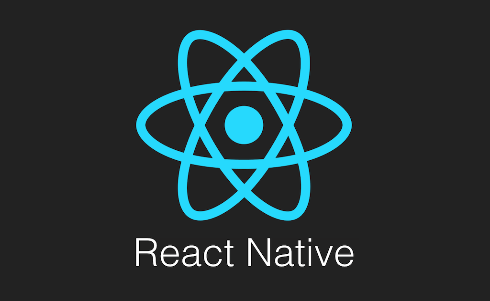

Site para UPX 1º semestre 2024
Site criado para o projeto de UPX do primeiro semestre de 2024. Feito usando React e Firebase como banco de dados.
Aplicativo móvel em React Native
App criado em React Native para apresentação de TCC do curso de Desenvolvimento de Sistemas da ETEC.
App de Clima em Xamarin
Mais um App, mas dessa vez feito em Xamarin para um projeto de escola. Nele é inserido o nome de uma localização (por ex.: uma cidade) e mostra a temperatura atual nela usando API do openWeather.
CRUD feito em PHP
Site simples feito para fucionar como um TO-DO app. Adiciona a tarefa e então é possível visualizá-la, editá-la, apagá-la ou marcar como feita.
Calculadora em C#

Um projeto feito em C# utilizando o Visual Studio como ferramenta. Nele é possível criar a interface de uma forma mais simples, onde ao invés de programar o tamanho de cada coisa, é possível visualizar cada componente no momento em que é adicionado e já editá-lo conforme preferência. Depois de feito, começa a parte de programar o que cada componente vai fazer, e o que cada botão ou trigger irá fazer na calculadora.